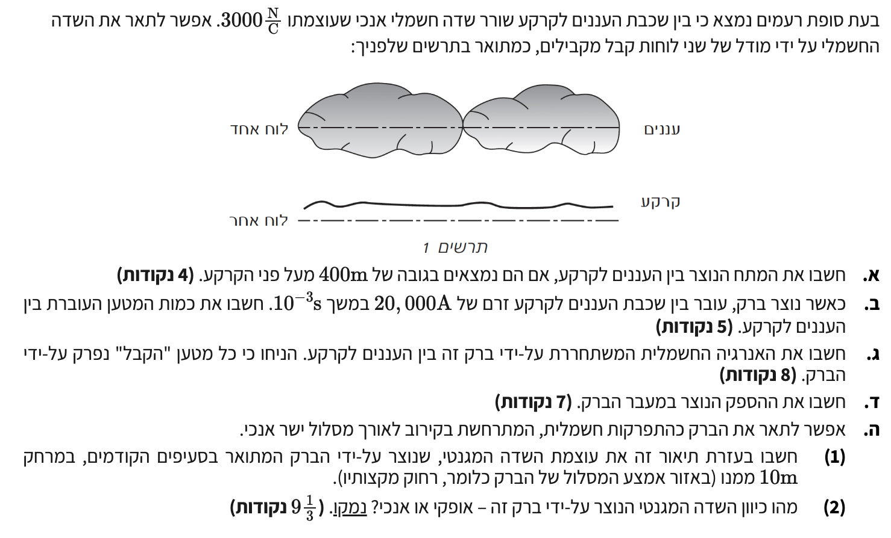

ברוכים הבאים לפתרון השאלה! בשאלה זו אנו מתמודדים עם מודל פיזיקלי מרתק: סופת רעמים.
אנו מדמים את העננים והקרקע כלוחות של קבל לוחות מקבילים. נזכור כי בשדה אחיד, קווי השדה מקבילים ומפוזרים באופן שווה במרחב שבין הלוחות. לפני שנתחיל בסעיפים, נרכז את הנתונים הראשוניים שניתנו לנו בהקדמה לשאלה.

[תמונת השאלה המקורית]לא נמצאה תמונה בשם question-image.png באותה תיקייה.
נתוני הפתיחה
עוצמת השדה החשמלי בין הענן לקרקע: \( E = 3000 \, \frac{\text{N}}{\text{C}} \).
תרשים: מודל הקבל ועוצמת השדה
סעיף א'
מה נתון: מרחק העננים מהקרקע (המרחק בין לוחות הקבל): \( d = 400 \, \text{m} \). הנתון כבר ביחידות תקניות (מטרים), ולכן אין צורך בהמרה.
מה מחפשים: אנו נדרשים לחשב את המתח החשמלי \( V \) (או הפרש הפוטנציאלים \( V_{AB} \)) בין שכבת העננים לקרקע.
נוסחאות ועקרונות בשימוש: \( E = \frac{V_{AB}}{d} \)
פתרון צעד-אחר-צעד:
נבודד את המתח \( V_{AB} \) מתוך הנוסחה על ידי הכפלת שני האגפים במרחק \( d \):
נהוג לכתוב מספרים גדולים בכתיב מדעי. ב-3 ספרות מהותיות התשובה תירשם כך:
מסקנה: \( V_{AB} = 1.2 \cdot 10^6 \, \text{V} \).
טיפ מורה:
שימו לב למשמעות התוצאה: מתח של 1.2 מיליון וולט! סופות רעמים אוגרות כמות אדירה של אנרגיה לפני שהברק משתחרר. חשוב לזכור ששדה אחיד הוא קירוב מצוין למערכות שבהן המרחק בין הלוחות קטן משמעותית משטח הלוחות, מה שמתקיים בהחלט ביחס לגודלם העצום של ענני סערה.
סעיף ב'
מה נתון: כאשר נוצר הברק, עובר זרם אדיר. הזרם \( I = 20,000 \, \text{A} \) וזמן מעבר הברק \( \Delta t = 10^{-3} \, \text{s} \). שני הנתונים ביחידות תקניות.
מה מחפשים: לחשב את כמות המטען החשמלי הכוללת \( \Delta q \) שעברה בין העננים לקרקע.
נוסחאות ועקרונות בשימוש: \( i = \frac{dq}{dt} \)\( I = \frac{\Delta q}{\Delta t} \)
פתרון צעד-אחר-צעד:
נבודד את המטען \( \Delta q \) מתוך הנוסחה (מכיוון שאנו מתייחסים לזרם ממוצע קבוע לאורך פרק הזמן של הברק):
\[ \Delta q = I \cdot \Delta t \]
נציב את נתוני הזרם והזמן:
\[ \Delta q = 20000 \cdot 10^{-3} \]
חישוב פשוט (הכפלה ב-\( 10^{-3} \) שקולה לחלוקה ב-1000):
מסקנה: \( \Delta q = 20 \, \text{C} \).
טיפ מורה:
יחידת הקולון (Coulomb) היא יחידה ענקית! בחיי היום יום באלקטרוסטטיקה אנו רגילים לעבוד עם מיקרו-קולונים או ננו-קולונים. מעבר של 20 קולון בפרק זמן קצרצר של אלפית שנייה ממחיש את עוצמתו ההרסנית של הברק.
סעיף ג'
מה נתון: מתח התחלתי טרם הפריקה \( V_{AB} = 1.2 \cdot 10^6 \, \text{V} \), ומטען שנפרק \( Q = 20 \, \text{C} \). נתון כי "הקבל" התרוקן לחלוטין.
מה מחפשים: סך האנרגיה החשמלית המשתחררת על ידי הברק \( U \) (או עבודת הכוח \( W \)).
נוסחאות ועקרונות בשימוש: \( U = \frac{1}{2}CV_{AB}^2 \)\( C = \frac{Q}{V} \)
פתרון צעד-אחר-צעד:
נפתח את הקשר עבור האנרגיה מתוך נוסחת האנרגיה של קבל טעון המופיעה בדף הנוסחאות, על ידי הצבת הגדרת הקיבול \( C = \frac{Q}{V_{AB}} \):
\[ U = \frac{1}{2} C V_{AB}^2 = \frac{1}{2} \left(\frac{Q}{V_{AB}}\right) V_{AB}^2 = \frac{1}{2} Q V_{AB} \]
מסקנה: סך האנרגיה המשתחררת היא \( U = 1.2 \cdot 10^7 \, \text{J} \).
טיפ מורה 1 - למה חצי?
מדוע האנרגיה היא לא פשוט \( W = qV \)? כשהברק מתחיל, המטען הראשון יורד במתח מלא, אך ככל שהקבל מתפרק, המתח הולך וצונח עד לאפס! לכן, המטען עבר מתח ממוצע של חצי מהמתח ההתחלתי. הנוסחה \( \frac{1}{2}QV \) משקללת את דעיכת המתח הזו.
טיפ מורה 2 - חשיבות ההנחה של פריקה מלאה:
מדוע הייתה חשובה ההנחה כי "כל מטען הברק נפרק על ידי הברק"? האנרגיה המשתחררת בברק שווה להפרש בין האנרגיה האגורה בקבל לפני הפריקה לבין האנרגיה שנותרה בו לאחריה: \( \Delta U = U_{\text{initial}} - U_{\text{final}} \). ההנחה שהקבל נפרק במלואו מבטיחה ש-\( Q_{\text{final}} = 0 \) ו-\( V_{\text{final}} = 0 \), ולכן \( U_{\text{final}} = 0 \). כתוצאה מכך, כל האנרגיה ההתחלתית השתחררה במעבר הברק, וכן המטען שחושב בסעיף ב' (\( 20 \, \text{C} \)) הוא אכן המטען הכולל \( Q \) שהיה אגור בקבל לפני הפריקה. אילו הייתה נשארת טעינה שיורית בענן, רק חלק מהאנרגיה היה משתחרר, וזאת הסיבה שאפשר להשתמש בנוסחת אנרגיה של קבל (ולא רק חלק ממנה).
סעיף ד'
מה נתון: סך האנרגיה בברק \( W = 1.2 \cdot 10^7 \, \text{J} \) ופרק זמן מעבר הברק \( \Delta t = 10^{-3} \, \text{s} \).
מה מחפשים: ההספק החשמלי הממוצע \( \bar{P} \) הנוצר במעבר הברק.
מסקנה: ההספק הממוצע הוא \( P = 1.2 \cdot 10^{10} \, \text{W} \).
טיפ מורה:
הספק של 12 מיליארד וואט (12 ג'יגה-וואט)! זהו הספק עצום המקביל למספר תחנות כוח גרעיניות, אך הוא נמשך לפרק זמן זעיר של אלפית שנייה. ההבדל בין אנרגיה להספק הוא קריטי כאן – סך האנרגיה מוגבל, בעוד שקצב השחרור אסטרונומי בגלל הזמן הקצר.
סעיף ה'
בסעיף זה אנו מקרבים את הברק לתיל אנכי וישר נושא זרם, ובוחנים את השדה המגנטי שהוא מייצר סביבו.
חלק (1) - חישוב עוצמת השדה המגנטי
מה נתון: המרחק מהברק \( r = 10 \, \text{m} \), זרם הברק \( I = 20,000 \, \text{A} \), וקבוע הפרמיאביליות בריק \( \mu_0 = 4\pi \cdot 10^{-7} \, \frac{\text{T}\cdot\text{m}}{\text{A}} \).
מה מחפשים: גודל השדה המגנטי \( B \) במרחק הנתון.
נוסחאות ועקרונות בשימוש: \( B = \frac{\mu_0 I}{2\pi r} \)
נציב את הנתונים למשוואה של שדה מגנטי סביב תיל ישר וארוך:
תשובה: כיוון השדה המגנטי הנוצר על ידי הברק הוא אופקי.
נימוק: על פי כלל עקומת אמפר (כלל יד ימין למוליך ישר): אם נכוון את אגודל ימין בכיוון הזרם החשמלי (שזורם במקרה זה בצורה אנכית, מהענן אל הקרקע או להיפך), אז שאר אצבעות היד יתעקלו סביב התיל ויתארו את קווי השדה המגנטי. קווים אלו יוצרים מעגלים קונצנטריים סביב התיל. מאחר והתיל (הברק) ממוקם על ציר אנכי, המעגלים המקיפים אותו חייבים להימצא במישור שניצב לו – כלומר, במישור האופקי. הוקטור המשיק למעגלים אלו מצביע תמיד לכיוון אופקי בלבד.
תרשים המחשה: שדה מגנטי סביב זרם אנכי
טיפ מורה - פרופורציות:
גודל השדה שחישבנו הוא \( 4 \cdot 10^{-4} \, \text{T} \). לשם השוואה, השדה המגנטי הטבעי של כדור הארץ באזורנו הוא בערך \( 0.5 \cdot 10^{-4} \, \text{T} \). כלומר, במרחק של 10 מטרים מנקודת הפגיעה, הברק מייצר שדה מגנטי חזק כמעט פי 10 מהשדה של כדור הארץ! זו הסיבה שמצפנים יכולים "להשתגע" בסביבת סופת ברקים.
נוסח השאלה המקורית
[תמונת השאלה המקורית]לא נמצאה תמונה בשם question-image.png.